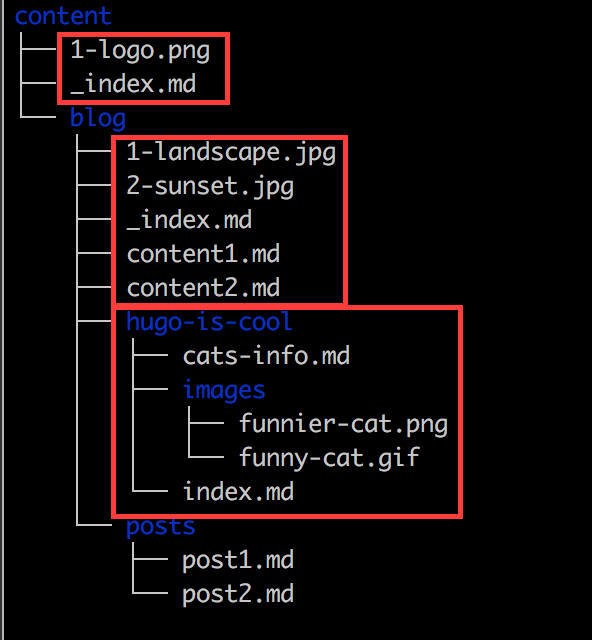

读完此篇，你将对 Hugo 有一个基础的了解。
关于 HugoHugo 和 GDPR（Hugo 和通用数据保护条例）Hugo 0.32 HOWTO（Hugo 0.32 指南）页面资源 - 组织内容页面资源 - 处理模板中的页面资源 图像处理图像处理 - 图像处理选项图像处理 - 性能配置What is Hugo（什么是雨果）Hugo Features（Hugo 特色）The Benefits of Static Site Generators（静态站点生成器的好处）License（许可证）
这节主要介绍了 Hugo 为了 GDPR 的相关内容，从 0.41 版本开始 Hugo 提供了一个涵盖相关内置模板的隐私配置（Privacy Config）以及隐私配置的一些详细解释。
GDPR：（General Data Protection Regulation）通用数据保护条例是欧盟法律中针对欧盟和欧洲经济区内所有个人的数据保护和隐私权的条例。
以下是所有隐私设置及其默认值（默认不可用），放在网站配置文件 config.toml 中。
配置文件可以有三种格式：.yaml、.json、 .toml。
现在不须要急着了解每一个配置项的具体作用 ✔️ 。（马上了解 The Privacy Settings Explained ❌）
xxxxxxxxxxprivacy disqus disablefalse googleAnalytics anonymizeIPfalse disablefalse respectDoNotTrackfalse useSessionStoragefalse instagram disablefalse simplefalse twitter disablefalse enableDNTfalse simplefalse vimeo disablefalse simplefalse youtube disablefalse privacyEnhancedfalse
这一节介绍了关于页面打包，图像处理等。
这一节内容本来是属于其它章节的，但它被提前了，因此重点看一下 “组织内容”，其它稍微过一遍即可。
这一节提供了一个 demo project 。（预览）
下面是一个具有图像资源的页面

上方的 content 文件夹展示了内容页面（md，即 markdown 文件）和图像资源的混合体。
你可以使用任何文件类型作为内容资源，只要它是 Hugo 可以识别的 MIME 类型（例如，json 文件就可以正常工作）。你也可以定义自己的媒体类型。
从上到下解释用红色标记的三个页面捆绑包：
1-logo.png）content1.md、content2.md）的部分（section）。注意 _index.md 表示此部分（section）的 URL。index.md 表示本文的 URL。blog/posts 下的内容只是常规的独立页面。
这里你可能有疑问，你可以按照上面的目录构建页面来查看效果。
index.md与_index.md有什么作用？你可以在目录中加入这两个文件来查看它们有什么不同。
注意，对
content文件夹中任何资源的更改将在监视（又名服务器或实时重载模式）下运行时触发重新加载，甚至可以与--navigateToChanged一起使用。
排序
列出所有资源
xxxxxxxxxx{{ range .Resources }} <li><a href="{{ .RelPermalink }}">{{ .ResourceType | title }}</a></li> <li><a href="{{ .Permalink }}">{{ .ResourceType | title }}</a></li>{{ end }}<!-- 下面是在页面上的实际渲染结果 --><li><a href="/dir1/dir2/dog.jpg">Image</a></li><li><a href="http://localhost:1313/dir1/dir2/dog.jpg">Image</a></li>
对于绝对 URL，请使用 .Permalink
注意：permalink（永久链接）将相对于内容页面，并遵守 permalink 链接设置。此外，包含的页面资源将没有RelPermalink 值。（这里结合实际的效果来理解就好了）
xxxxxxxxxx{{ with .Resources.ByType "image" }}{{ end }}
这里的类型是页面类型，同时也是 MIME 类型中的主要的类型，主要的 MIME 类型还有 image，json 等。
xxxxxxxxxx{{ $logo := .Resources.GetByPrefix "logo" }}{{ with $logo }}{{ end }}
xxxxxxxxxx{{ with .Resources.ByType "page" }}{{ range . }}<h3>{{ .Title }}</h3>{{ .Content }}{{ end }}{{ end }}
图像资源实现了 Resize、Fit 和 Fill:” 方法：（调整、适合和填充）
{{$ logo.Resize“ 200x”}} 将调整为200像素宽，并保留宽高比。使用 {{$ logo.Resize“ 200x100”}} 来控制高度和宽度。{{$ logo.Fit“ 200x100”}} 将使图像适合200像素宽和100像素高的盒子。{{$ logo.Fill“ 200x100”}} 将调整大小并裁剪为宽度200像素和高度100像素。
由于 Go 的图片包（image package）不支持 EXIF 数据，因此 Hugo 中的图片操作目前无法保存 EXIF 数据。将来会对此进行改进。
👉 原文档给出了一个图像处理的示例，点击查看 Image Processing Examples
除了可以省略高度或宽度的尺寸（例如200x100）外，Hugo 还支持一组其他图像选项：
锚（Anchor）：仅与 Fill 有关 。这对于在哪生成缩略图很有用，例如，左上角。有效值 Center、TopLeft、Top、TopRight、Left、Right、BottomLeft、Bottom、BottomRight。例如：{{ $logo.Fill "200x100 BottomLeft" }}
JPEG 画质（JPEG Quality）：仅与 JPEG 图像相关，值为 1 到 100，越高越好，默认值为75。{{ $logo.Resize "200x q50" }}
旋转（Rotate）：将图像逆时针旋转给定角度。它将先旋转以获得正确的尺寸。{{ $logo.Resize "200x r90" }}。其主要用途是能够手动校正 JPEG 图像的 EXIF方向。
重采样过滤器（Resample Filter）：调整大小时使用的过滤器。默认值为 Box，这是一个适合缩小比例的简单快速的重采样滤波器。有关更多信息，请参见 https://github.com/disintegration/imaging。如果您想以质量换取更快的处理速度，可以选择进行测试。
处理后的图像存储在 <project-dir>/resources 下（可以使用 resourceDir 配置设置进行设置）。这个是文件夹故意放置在项目中，因为它们被建议作为项目的一部分来检查源代码管理。这些图像不是 “雨果快速” 生成，但是一旦生成，便可以重复使用。
如果你更改了图像设置（例如尺寸），删除或重命名了图像等，最终将导致未使用的图像占用空间并使项目混乱。你可一运行下面的命令：
xxxxxxxxxxhugo -gc
GC 是 Garbage Collection (垃圾收集）的缩写。
默认图像处理配置：
您可以使用默认的图像处理选项在 config.toml 中配置成像部分：
xxxxxxxxxx[imaging]# Default resample filter used for resizing. Default is Box,# a simple and fast averaging filter appropriate for downscaling.# See https://github.com/disintegration/imagingresampleFilter = "box"# Default JPEG quality setting. Default is 75.quality = 68
这一节介绍了 Hugo 是什么、做什么以及谁应该使用雨果。（了解即可）
Hugo 是一个用 Go 语言编写的快速、现代化的静态网站生成器，旨在让网站创建再次变得有趣。Hugo 站点可以托管在任何地方，包括 Netlify，Heroku，GoDaddy，DreamHost，GitHub Pages，GitLab Pages，Surge，Aerobatic，Firebase，Google Cloud Storage，Amazon S3，Rackspace，Azure和CloudFront，并且可以与 CDN 很好地协作。
用技术术语来说，Hugo 获取文件和模板的源目录，并将其用作输入来创建完整的网站。
🐮 这一节主要介绍了 Hugo 的牛掰之处，如强大的内容管理和模板语言。
📌 注：下面有一些陌生的名词，如 taxonomies、front matter、shortcodes 等，将在后面的解释，本节内容大致过一遍就好。
这一节简单介绍了一下静态站点生成器的好处，没有需要特殊了解的点。（下面是拓展知识，与文档无关）
什么是静态网站和动态网站？（下面个人理解）
📝 这一节介绍 Hugo 使用的许可证，Hugo v0.15 和更高版本是根据 Apache 2.0 许可发布的，早期版本是根据 “Simple Public License” 发布的。（下面内容与文档无关，可以选择性阅读）
Apache License 2.0 是一个由 Apache 软件基金会发布的自由软件许可证，它允许个人使用、商业使用、复制、分发、修改，作者免责，需要保留作者版权信息，声明更改的地方。下面是简单解释：
实际开发中如何使用 Apache 2.0 许可证？
准备一份 Apache 2.0 许可证的拷贝，（可以从 Apache 基金会 拷贝）
修改下面的通告声明，修改之前你需要知道：
[yyyy] 应该被替换成年份如 2019，[name of copyright owner]替换成作者姓名如 Jack。LICENSE，把准备的许可证内容拷贝进去。另一个文件命名成 NOTICE，用来放置通告声明的内容，以及一系列项目中用到的第三方类库的名字（最好也包括这些类库的作者）。
xxxxxxxxxxCopyright [yyyy] [name of copyright owner]Licensed under the Apache License, Version 2.0 (the "License");you may not use this file except in compliance with the License.You may obtain a copy of the License athttp://www.apache.org/licenses/LICENSE-2.0Unless required by applicable law or agreed to in writing, softwaredistributed under the License is distributed on an "AS IS" BASIS,WITHOUT WARRANTIES OR CONDITIONS OF ANY KIND, either express or implied.See the License for the specific language governing permissions andlimitations under the License.